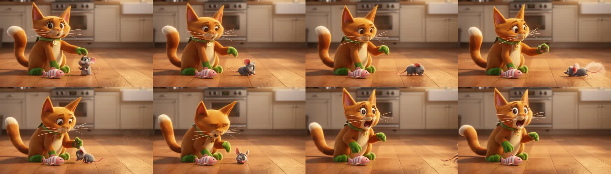
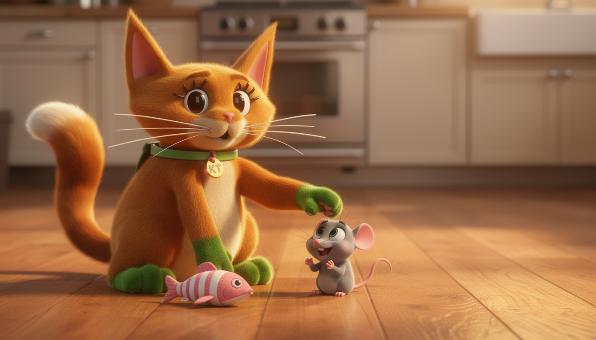
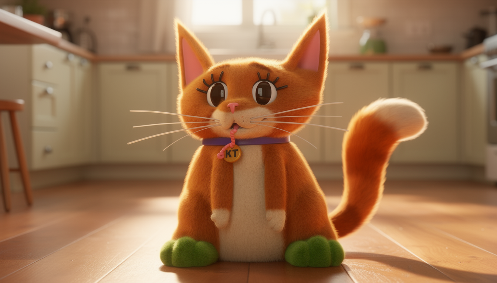
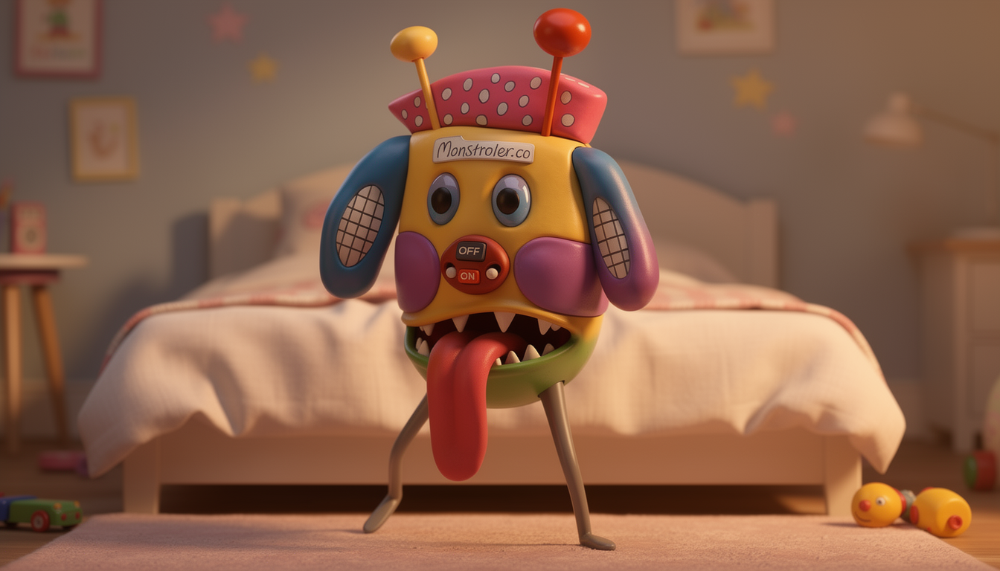
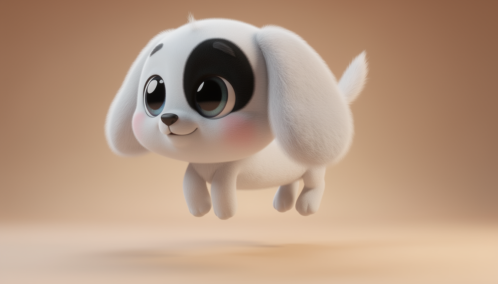
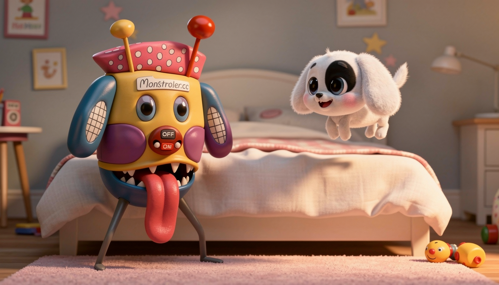
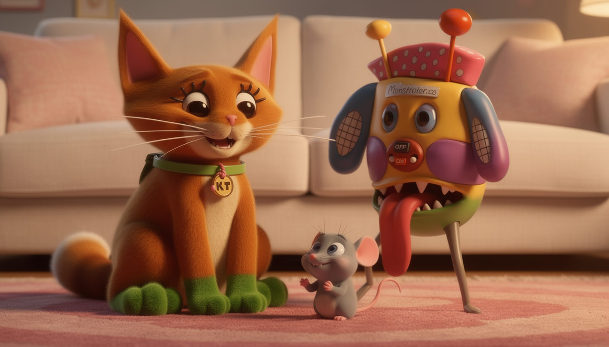

KT and Monstroler: shot stills + sample
Sample clip frames (shot 4)

Shot stills

kt_mouse_start

kt_hero

monstroler_hero

dog_hero

monstroler_dog_scene

finale_both
Shot list: artifacts/shot_list.md